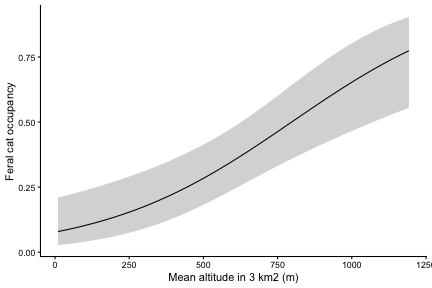

This vignette fits single-season occupancy and abundance models to WildObs data with four R packages. It starts where Detection histories and sampling effort ends, with project 0001 resampled to 3 km² hexagonal cells, so everything runs offline on the data shipped with WildObsR.
| Model | Package | model_matrix_input(output = ) |
|---|---|---|
| Occupancy, abundance and community occupancy, by maximum likelihood | unmarked | "unmarked" |
| Bayesian occupancy, with or without spatial autocorrelation | spOccupancy | "spOccupancy" |
| Bayesian N-mixture abundance | spAbundance | "spAbundance" |
| Any custom model you write yourself | NIMBLE, JAGS or brms for Stan | "array" |
The models here are deliberately small, and the Bayesian chains are short so the page builds in minutes. Before publishing, follow each package’s guidance on covariates, priors and chain length, linked at the end.
Build the inputs
Every model below shares one effort matrix and one table of site covariates. Effort comes from the deployments, split by trail status, and the covariates are averaged over the cameras in each cell:
# load R packages
library(WildObsR) # for example data and data prep functions
library(sf) # for spatial data wrangling
library(unmarked) # for running frequentist occu, abund, and community models
library(spOccupancy) # for running Bayesian occupancy models, spatial or not
library(spAbundance) # for running Bayesian abundance models
library(nimble) # for writing your own Bayesian models
# grab the Wet Tropics survey shipped with WildObsR
dp <- example_datapackages("ZAmir_QLD_Wet_Tropics_2022_WildObsID_0001")[[1]]
# extract the three tables, read with their schema types
deps <- frictionless::read_resource(dp, "deployments")
covs <- frictionless::read_resource(dp, "covariates")
obs <- frictionless::read_resource(dp, "observations")
# merge deployments and their environmental covariates as one table
deps <- merge(deps, covs, by = intersect(names(deps), names(covs)))
# create a two-level trail status: offTrail where featureType is NA, otherwise onTrail
deps$trailStatus <- ifelse(is.na(deps$featureType), "offTrail", "onTrail")
# assign every deployment to a 3 km2 hexagonal cell
deps <- spatial_hexagon_generator(data = deps, scales = 3e6)
## generate the effort matrix as camera-days per cell and occasion
# where a cell is the 3 km2 hexagonal cell, an occasion is 7 days, and the maximum duration is 70 days
eff <- effort_matrix(deps = deps, site_col = "cellID_3km2", w = 7, dur = 70,
# split the matrix by on vs off trail, and specify the timezone
split_by = "trailStatus", time_zone = dp$temporal$timeZone)
# spatially resample covariates to average each value over the cell's cameras, weighted by effort,
# and take the most common trail status
cell <- resample_covariates_and_observations(covs = deps, mode_cols_covs = "trailStatus")
# grab the spatially resampled covariates as a dataframe at the key scale
cell_covs <- cell$spatially_resampled_covariates$cellID_3km2Site covariates require one value per cell. Here they are forest integrity and altitude averaged across all cameras in the 3 km² cell, and the landscape the cell sits in, coded as a whole number because spOccupancy and spAbundance read random effects only from numbers:
# keep the cell ID, the site covariates for the model, and the landscape
site_covs <- cell_covs[, c("cellID_3km2", "Avg_FLII_3km2", "Avg_altitude_3km2", "locationName")]
# re-code each landscape as a number, for random effects
site_covs$landscape <- as.integer(factor(site_covs$locationName))
# view how many cells each landscape holds, matched by coded number
table(site_covs$locationName, site_covs$landscape)
#>
#> 1 2 3 4 5 6
#> Daintree_NP 23 0 0 0 0 0
#> Danbulla_NP 0 13 0 0 0 0
#> Eacham_Curtain_Fig_NPs 0 0 8 0 0 0
#> Mount_Lewis_NP 0 0 0 14 0 0
#> Wooroonooran_Goldfield_Track 0 0 0 0 19 0
#> Wooroonooran_NP 0 0 0 0 0 19
# and drop the names, since the models read only numbers
site_covs$locationName <- NULLSpatial models need coordinates in metres. Project the cells’ average positions onto the Australian Albers projection (EPSG:3577), which covers the whole continent:
# turn each hexagonal cell's average longitude and latitude into spatial points, in decimal degrees
pts <- sf::st_as_sf(cell_covs, coords = c("Avg_longitude", "Avg_latitude"), crs = 4326)
# project them to Albers projection (metres)
xy <- sf::st_coordinates(sf::st_transform(pts, 3577))
# create a dataframe with the transformed spatial points,
# but keep the cell ID so we match them by name
coords <- data.frame(cellID_3km2 = cell_covs$cellID_3km2, X = xy[, "X"], Y = xy[, "Y"])Site or observation covariates? A site covariate has
one value per cell (i.e., a row in the detection matrix) and
can be included in the occupancy or abundance formula of a model. It can
also be included in the detection formula, as total_effort
is below. An observation covariate has one value per cell and occasion
(i.e., a row and a column in the detection matrix), so it can
only be included in the detection formula.
model_matrix_input() always adds the observation covariates
effort (camera-days) and the share of camera-days in each
level of the split_by column given to
effort_matrix(); here trailStatus_onTrail is
the share of camera-days on a trail. model_matrix_input()
also always adds the site covariate total_effort.
Additional observation covariates you build yourself, such as rainfall
per occasion, can be included in model_matrix_input()
through its obs_covs argument as site x occasion
matrices.
Occupancy in unmarked
Feral cats (Felis catus) were detected in about a third of the 3 km² cells, which leaves enough variation for occupancy to explain its distribution:
# create the detection history to quantify occupancy of feral cats in each cell and occasion
y_cat <- detection_matrix(obs = obs, effort = eff, scientificNames = "Felis catus", type = "occupancy")
#> detection_matrix(): set aside 452 obscured observation(s), which carry no camera.
#> Detection histories from public data under-count those species where they are listed.
#> detection_matrix(): left out 19 detection(s) after the first 70 days (dur).
# produce the input required for modelling, formatted for unmarked, with covariates matched to cells by name
umf <- model_matrix_input(detections = y_cat, effort = eff, site_covs = site_covs, output = "unmarked")
# view the site covariates
summary(unmarked::siteCovs(umf))
#> Avg_FLII_3km2 Avg_altitude_3km2 landscape total_effort
#> Min. :0.8705 Min. : 10.07 Min. :1.000 Min. : 15.5
#> 1st Qu.:7.0491 1st Qu.: 124.79 1st Qu.:2.000 1st Qu.:102.1
#> Median :7.8273 Median : 617.97 Median :4.000 Median :138.4
#> Mean :7.3980 Mean : 503.78 Mean :3.521 Mean :164.7
#> 3rd Qu.:8.9015 3rd Qu.: 763.35 3rd Qu.:5.000 3rd Qu.:211.8
#> Max. :9.5900 Max. :1192.69 Max. :6.000 Max. :625.7
# and the observation covariates, which are NA only where no camera ran
summary(unmarked::obsCovs(umf))
#> effort trailStatus_offTrail trailStatus_onTrail
#> Min. : 0.3639 Min. :0.0000 Min. :0.0000
#> 1st Qu.:10.2681 1st Qu.:0.4995 1st Qu.:0.4384
#> Median :14.0000 Median :0.5000 Median :0.5000
#> Mean :16.9694 Mean :0.5051 Mean :0.4949
#> 3rd Qu.:21.0000 3rd Qu.:0.5616 3rd Qu.:0.5005
#> Max. :63.0000 Max. :1.0000 Max. :1.0000
#> NA's :28 NA's :28 NA's :28unmarked formulas have two sides,
~ detection ~ occupancy, where the formula after the first
tilde ~ includes detection covariates, and the formula
after the second tilde ~ includes occupancy covariates.
Scaling continuous covariates with scale() helps the model
optimiser and puts the coefficients on comparable scales.
One common approach is to choose the detection formula first, ranked by the Akaike Information Criterion (AIC), where a lower AIC indicates a better-supported model, and models within 2 AIC points of each other have similar support. After the best detection formula is settled, we repeat the process for the occupancy formula.
The first four models compare the three detection covariates:
total_effort, one value per cell, effort,
which varies per cell and occasion, and
trailStatus_onTrail, the share of camera-days on trail per
cell and occasion. We also include a null model with no covariates as
the base of comparison:
# fit four models: no covariates, then one detection covariate each
det_fits <- fitList(
# constant detection and occupancy
null = occu(~ 1 ~ 1, umf),
# detection rises with the cell's total camera-days
total_effort = occu(~ scale(total_effort) ~ 1, umf),
# detection rises with the camera-days in each occasion
effort = occu(~ scale(effort) ~ 1, umf),
# detection changes with the share of camera-days on trail
trail = occu(~ trailStatus_onTrail ~ 1, umf)
)
# rank them by AIC
modSel(det_fits)
#> nPars AIC delta AICwt cumltvWt
#> effort 3 491.69 0.00 0.40 0.40
#> null 2 492.19 0.51 0.31 0.71
#> total_effort 3 493.75 2.06 0.14 0.86
#> trail 3 493.77 2.08 0.14 1.00In this case, we could test combinations of additive covariates in the detection formula due to competing AIC scores where the delta is <2, but for the sake of the example, we will take the model with the lowest AIC as our detection formula.
For the occupancy formula, we repeat the process while holding the
detection formula constant. We fit three models:
Avg_FLII_3km2 and Avg_altitude_3km2 each
alone, and both together as additive effects.
# fit the three models for occupancy, with the best detection model held constant
occu_fits <- fitList(
# forest integrity, alone
fi = occu(~ scale(effort) ~ scale(Avg_FLII_3km2), umf),
# altitude, alone
alt = occu(~ scale(effort) ~ scale(Avg_altitude_3km2), umf),
# altitude and forest integrity together
fi_alt = occu(~ scale(effort) ~ scale(Avg_FLII_3km2) + scale(Avg_altitude_3km2), umf)
)
# rank them by AIC
modSel(occu_fits)
#> nPars AIC delta AICwt cumltvWt
#> fi_alt 5 470.34 0.00 6.9e-01 0.69
#> alt 4 471.92 1.58 3.1e-01 1.00
#> fi 4 488.54 18.20 7.7e-05 1.00The combination of forest integrity and altitude created the best-fitting model, though it is within 2 AIC points of the next best fitting model, altitude in isolation. While this could motivate additional testing with more covariates, we will take the combination of forest integrity and altitude for our occupancy formula.
When datasets span multiple landscapes, each one may differ in ways the covariates may not capture, sometimes due to unmeasured effects (e.g., variable park management). A random intercept for each landscape, in lme4 syntax, lets occupancy vary among them:
# the full model, with a random intercept for each landscape
cat_occ <- occu(~ scale(effort)
~ scale(Avg_FLII_3km2) + scale(Avg_altitude_3km2) + (1 | landscape), umf)
cat_occ
#>
#> Call:
#> occu(formula = ~scale(effort) ~ scale(Avg_FLII_3km2) + scale(Avg_altitude_3km2) +
#> (1 | landscape), data = umf)
#>
#> Occupancy (logit-scale):
#> Random effects:
#> Groups Name Variance Std.Dev.
#> landscape (Intercept) 2.011 1.418
#>
#> Fixed effects:
#> Estimate SE z P(>|z|)
#> (Intercept) -1.544 0.778 -1.98 0.0471
#> scale(Avg_FLII_3km2) -0.627 0.497 -1.26 0.2068
#> scale(Avg_altitude_3km2) 1.669 0.652 2.56 0.0104
#>
#> Detection (logit-scale):
#> Estimate SE z P(>|z|)
#> (Intercept) -0.953 0.146 -6.51 7.34e-11
#> scale(effort) 0.161 0.103 1.57 1.18e-01
#>
#> AIC: 457.0426
#> Number of sites: 96Check the model’s goodness of fit before trusting its estimates. The
unmarked function parboot() simulates new data from the
model and compares a fit statistic with the one from the real data. A
value of Pr(t_B > t0) below 0.05 suggests the model fits
poorly:
# a chi-squared statistic over every cell and occasion where a camera ran
chisq <- function(fm) {
# the observed detections
o <- getY(fm@data)
# the expected detections
e <- fitted(fm)
# the sum of squared differences, scaled by their expected variance
sum((o - e)^2 / (e * (1 - e)), na.rm = TRUE)
} # end chisq function
# set the seed to make the simulations repeatable
set.seed(1)
# compare the real statistic with 100 simulations from the full model; occasions with no
# camera simulate as NA, and the warnings about them are expected
suppressWarnings(parboot(cat_occ, statistic = chisq, nsim = 100))
#>
#> Call: parboot(object = cat_occ, statistic = chisq, nsim = 100)
#>
#> Parametric Bootstrap Statistics:
#> t0 mean(t0 - t_B) StdDev(t0 - t_B) Pr(t_B > t0)
#> 1 519 -154 184 0.713
#>
#> t_B quantiles:
#> 0% 2.5% 25% 50% 75% 97.5% 100%
#> [1,] 433 452 518 647 785 1123 1493
#>
#> t0 = Original statistic computed from data
#> t_B = Vector of bootstrap samplesHere 0.71 shows no lack of fit by this statistic, which looks at each occasion separately. The check by cell in spOccupancy, below, is stricter and finds a problem this one misses.
We can use the function predict() to return occupancy on
the probability scale. Here it is across the altitudes of the surveyed
cells, holding forest integrity at its average:
# create a dataframe using a sequence of altitude values spanning the observed range
nd <- data.frame(
Avg_altitude_3km2 = seq(min(site_covs$Avg_altitude_3km2), max(site_covs$Avg_altitude_3km2),
length.out = 50),
# and keep forest integrity at its average
Avg_FLII_3km2 = mean(site_covs$Avg_FLII_3km2)
)
# predict occupancy and its 95% interval from the model without the random effect
pred <- cbind(nd, predict(occu_fits@fits$fi_alt, type = "state", newdata = nd))
# plot occupancy against altitude
ggplot2::ggplot(pred, ggplot2::aes(Avg_altitude_3km2, Predicted)) +
# the 95% interval as a ribbon
ggplot2::geom_ribbon(ggplot2::aes(ymin = lower, ymax = upper), fill = "grey85") +
# and the estimate as a line
ggplot2::geom_line() +
# label the axes
ggplot2::labs(x = "Mean altitude in 3 km2 (m)", y = "Feral cat occupancy") +
# a plain background
ggplot2::theme_classic()
Abundance in unmarked
N-mixture models estimate abundance from repeated counts, so first
check that the project recorded group sizes. The metadata say so in
WildObsMetadata$groupSizes, which is quicker than
downloading the observations (use
wildobs_dp_download(metadata_only = TRUE)):
# did this project count the animals in each observation?
dp$WildObsMetadata$groupSizes
#> [1] TRUEFeral pigs (Sus scrofa) often travel in groups.
individuals = "max" takes the largest group seen in each
occasion as the conservative choice. You could instead use
"sum", which produces more variation between occasions, but
may count the same animals twice, which violates the model’s assumption
of no double-counting of individuals.
You can create a count history matrix using the
detection_matrix() function while specifying
type = "abundance":
# create the count history: the most pigs seen together in each cell and occasion
n_pig <- detection_matrix(obs, eff, "Sus scrofa", type = "abundance", individuals = "max")
#> detection_matrix(): set aside 452 obscured observation(s), which carry no camera.
#> Detection histories from public data under-count those species where they are listed.
#> detection_matrix(): left out 158 detection(s) after the first 70 days (dur).
# format it for unmarked, with the same effort matrix and site covariates as the cat models
umf_n <- model_matrix_input(n_pig, eff, site_covs = site_covs, output = "unmarked")unmarked provides the function pcount() to run N-mixture
models. The function allows for different distributions through the
mixture parameter. We will fit and compare the Poisson
("P") and the negative binomial ("NB"), which
allows more variation in abundance among cells:
# the cat models' occupancy covariates on abundance, with Poisson or negative binomial abundance
pig <- fitList(
P = pcount(~ scale(effort) + trailStatus_onTrail ~
scale(Avg_FLII_3km2) + scale(Avg_altitude_3km2), umf_n, mixture = "P"),
NB = pcount(~ scale(effort) + trailStatus_onTrail ~
scale(Avg_FLII_3km2) + scale(Avg_altitude_3km2), umf_n, mixture = "NB")
)
#> Warning in pcount(~scale(effort) + trailStatus_onTrail ~ scale(Avg_FLII_3km2) +
#> : K was not specified and was set to 109.
#> Warning in pcount(~scale(effort) + trailStatus_onTrail ~ scale(Avg_FLII_3km2) +
#> : K was not specified and was set to 109.
# rank them by AIC
modSel(pig)
#> nPars AIC delta AICwt cumltvWt
#> NB 7 2078.04 0.00 1.0e+00 1.00
#> P 6 2189.54 111.50 6.1e-25 1.00Unlike the occupancy models where we had competing AIC scores, the
N-mixture model with the negative binomial distribution far outperforms
the model using the Poisson distribution. predict() and the
plot above work the same way with this abundance model.
Community occupancy in unmarked
occuComm() fits an occupancy model for all species at
once. Each species has its own intercepts and slopes, drawn from a
shared distribution, so rare species borrow strength from common ones.
For this analysis, we will keep species identified to species rank,
leave out obscured records, and require enough independent detections.
There is no established minimum, so here a species needs at least 20
independent 60-minute detections: reclassify_eventID()
regroups the observations into 60-minute events first.
# first, subset for animal observations identified to species, and remove obscured records
animals <- obs[obs$observationType == "animal" & obs$taxonRank %in% "species" &
!grepl("^obscured_for_", obs$deploymentID), ]
# regroup them into independent 60-minute events
animals_60 <- reclassify_eventID(animals, 60)
# count each species' 60-minute events
n_events <- tapply(animals_60$eventID, animals_60$scientificName,
function(x) length(unique(x)))
# keep species with at least 20
community <- names(n_events)[n_events >= 20]
# how many species are included?
length(community)
#> [1] 26
# create a detection history for every kept species
y_comm <- detection_matrix(obs = obs, effort = eff, scientificNames = community, type = "occupancy")
#> detection_matrix(): set aside 452 obscured observation(s), which carry no camera.
#> Detection histories from public data under-count those species where they are listed.
#> detection_matrix(): left out 1610 detection(s) after the first 70 days (dur).
# format them for unmarked as one community frame
umf_comm <- model_matrix_input(detections = y_comm, effort = eff, site_covs = site_covs, output = "unmarked")
# check it is a community frame
class(umf_comm)
#> [1] "unmarkedFrameOccuComm"
#> attr(,"package")
#> [1] "unmarked"
# fit the community model, with species-level intercepts and slopes
comm <- occuComm(~ scale(effort) + trailStatus_onTrail ~ scale(Avg_FLII_3km2), umf_comm)
# view the results
comm
#>
#> Call:
#> occuComm(formula = ~scale(effort) + trailStatus_onTrail ~ scale(Avg_FLII_3km2),
#> data = umf_comm)
#>
#> Occupancy (logit-scale):
#> Random effects:
#> Groups Name Variance Std.Dev.
#> species (Intercept) 2.680 1.637
#> species scale(Avg_FLII_3km2) 0.146 0.383
#>
#> Fixed effects:
#> Estimate SE z P(>|z|)
#> (Intercept) -0.2797 0.3278 -0.853 0.394
#> scale(Avg_FLII_3km2) -0.0344 0.0985 -0.349 0.727
#>
#> Detection (logit-scale):
#> Random effects:
#> Groups Name Variance Std.Dev.
#> species (Intercept) 1.070 1.035
#> species scale(effort) 0.123 0.350
#> species trailStatus_onTrail 1.261 1.123
#>
#> Fixed effects:
#> Estimate SE z P(>|z|)
#> (Intercept) -0.585 0.2206 -2.652 8.01e-03
#> scale(effort) 0.490 0.0791 6.195 5.82e-10
#> trailStatus_onTrail -0.233 0.2720 -0.857 3.92e-01
#>
#> AIC: 14573.12
#> Number of species: 26
#> Number of sites: 96The fixed effects are the community averages. The random-effect variances show how much species differ around them.
Bayesian occupancy in spOccupancy
spOccupancy fits occupancy models like those in unmarked, but by
Bayesian MCMC, here with the PGOcc() function. Its
data list holds y (the detection matrix),
occ.covs (the site-level covariates), det.covs
(the observation covariates), and coords (the coordinates
for spatial autocorrelation), and random effects take lme4 syntax:
# format the cat detections for spOccupancy, with coordinates for the spatial model
cat_sp <- model_matrix_input(y_cat, eff, site_covs = site_covs, coords = coords,
output = "spOccupancy")
# view what it holds
names(cat_sp)
#> [1] "y" "occ.covs" "det.covs" "coords"
# set the seed to make the chains repeatable
set.seed(1)
# fit the cat model with a landscape random effect as a Bayesian model, with the occupancy formula,
cat_pg <- PGOcc(occ.formula = ~ scale(Avg_FLII_3km2) + scale(Avg_altitude_3km2) + (1 | landscape),
# and the detection formula independently
det.formula = ~ scale(effort) + trailStatus_onTrail,
# specify the data and the MCMC settings
data = cat_sp, n.samples = 10000, n.burn = 5000, n.thin = 5,
n.chains = 3, verbose = FALSE)
# view what the model returned
summary(cat_pg)
#>
#> Call:
#> PGOcc(occ.formula = ~scale(Avg_FLII_3km2) + scale(Avg_altitude_3km2) +
#> (1 | landscape), det.formula = ~scale(effort) + trailStatus_onTrail,
#> data = cat_sp, n.samples = 10000, verbose = FALSE, n.burn = 5000,
#> n.thin = 5, n.chains = 3)
#>
#> Samples per Chain: 10000
#> Burn-in: 5000
#> Thinning Rate: 5
#> Number of Chains: 3
#> Total Posterior Samples: 3000
#> Run Time (min): 0.0596
#>
#> Occurrence (logit scale):
#> Mean SD 2.5% 50% 97.5% Rhat ESS
#> (Intercept) -1.0122 0.9390 -2.7140 -1.0583 1.0756 1.0194 536
#> scale(Avg_FLII_3km2) -0.7212 0.7085 -2.3471 -0.6480 0.5434 1.0092 795
#> scale(Avg_altitude_3km2) 1.4840 0.6722 0.1993 1.4592 2.8594 1.0171 1066
#>
#> Occurrence Random Effect Variances (logit scale):
#> Mean SD 2.5% 50% 97.5% Rhat ESS
#> landscape 7.4328 14.027 0.6014 3.9443 33.4405 1.0781 541
#>
#> Detection (logit scale):
#> Mean SD 2.5% 50% 97.5% Rhat ESS
#> (Intercept) -1.2057 0.3913 -1.9715 -1.1950 -0.4653 0.9999 2715
#> scale(effort) 0.1759 0.1044 -0.0271 0.1754 0.3834 1.0035 2800
#> trailStatus_onTrail 0.3995 0.6279 -0.8214 0.3967 1.6226 1.0000 3000The Rhat value denotes parameter convergence, where each
Rhat should be below 1.1, indicating that the chains agree.
The effective sample size ESS should be in the hundreds or
more. Then we can check the model’s goodness of fit with a posterior
predictive check: ppcOcc() compares the real data with data
simulated from the model, summed by cell (group = 1) and by
occasion (group = 2). A Bayesian p-value near 0.5 means a
good fit. Here we treat 0.25 to 0.75 as adequate, which is stricter than
the 0.1 to 0.9 often used:
# run the PPC to compare real and simulated detections, summed by cell
summary(ppcOcc(cat_pg, fit.stat = "freeman-tukey", group = 1))
#>
#> Call:
#> ppcOcc(object = cat_pg, fit.stat = "freeman-tukey", group = 1)
#>
#> Samples per Chain: 10000
#> Burn-in: 5000
#> Thinning Rate: 5
#> Number of Chains: 3
#> Total Posterior Samples: 3000
#>
#> Bayesian p-value: 0.0127
#> Fit statistic: freeman-tukey
# repeat the PPC, now summed by occasion (group = 2)
summary(ppcOcc(cat_pg, fit.stat = "freeman-tukey", group = 2))
#>
#> Call:
#> ppcOcc(object = cat_pg, fit.stat = "freeman-tukey", group = 2)
#>
#> Samples per Chain: 10000
#> Burn-in: 5000
#> Thinning Rate: 5
#> Number of Chains: 3
#> Total Posterior Samples: 3000
#>
#> Bayesian p-value: 0.418
#> Fit statistic: freeman-tukeyThe occasions fit, but the cells do not: a few cells detected cats on many occasions, more than the model expects. That points to detection differing among cells for reasons the covariates miss. A random intercept for each cell in the detection formula allows for it:
# create a random effect per cell by giving each cell its own number
cat_sp$det.covs$cell <- seq_len(nrow(cat_sp$y))
# make the chains repeatable
set.seed(1)
# re-make the spatial occupancy model with the same occupancy formula
cat_pg2 <- PGOcc(occ.formula = ~ scale(Avg_FLII_3km2) + scale(Avg_altitude_3km2) + (1 | landscape),
# but we add the random intercept to each cell in detection
det.formula = ~ scale(effort) + trailStatus_onTrail + (1 | cell),
# and keep the data and MCMC settings the same
data = cat_sp, n.samples = 10000, n.burn = 5000, n.thin = 5,
n.chains = 3, verbose = FALSE)
# view a summary of the results.
summary(cat_pg2)
#>
#> Call:
#> PGOcc(occ.formula = ~scale(Avg_FLII_3km2) + scale(Avg_altitude_3km2) +
#> (1 | landscape), det.formula = ~scale(effort) + trailStatus_onTrail +
#> (1 | cell), data = cat_sp, n.samples = 10000, verbose = FALSE,
#> n.burn = 5000, n.thin = 5, n.chains = 3)
#>
#> Samples per Chain: 10000
#> Burn-in: 5000
#> Thinning Rate: 5
#> Number of Chains: 3
#> Total Posterior Samples: 3000
#> Run Time (min): 0.1078
#>
#> Occurrence (logit scale):
#> Mean SD 2.5% 50% 97.5% Rhat ESS
#> (Intercept) 0.0188 1.1269 -2.2096 -0.0047 2.3266 1.0969 441
#> scale(Avg_FLII_3km2) -1.2858 1.0569 -3.4462 -1.2174 0.6817 1.0033 665
#> scale(Avg_altitude_3km2) 1.9509 0.9683 0.1180 1.9277 3.8971 1.0047 462
#>
#> Occurrence Random Effect Variances (logit scale):
#> Mean SD 2.5% 50% 97.5% Rhat ESS
#> landscape 16.5176 32.2516 0.3064 6.5204 97.0995 1.0112 445
#>
#> Detection (logit scale):
#> Mean SD 2.5% 50% 97.5% Rhat ESS
#> (Intercept) -2.2383 0.6655 -3.6425 -2.2197 -0.9658 1.0234 475
#> scale(effort) 0.6931 0.2603 0.2074 0.6847 1.2292 1.0035 757
#> trailStatus_onTrail 0.1279 0.8917 -1.6629 0.1332 1.8096 1.0017 2244
#>
#> Detection Random Effect Variances (logit scale):
#> Mean SD 2.5% 50% 97.5% Rhat ESS
#> cell 4.5181 2.0155 1.6826 4.1264 9.621 1.0232 483
# check the goodness of fit again, first by cell
summary(ppcOcc(cat_pg2, fit.stat = "freeman-tukey", group = 1))
#>
#> Call:
#> ppcOcc(object = cat_pg2, fit.stat = "freeman-tukey", group = 1)
#>
#> Samples per Chain: 10000
#> Burn-in: 5000
#> Thinning Rate: 5
#> Number of Chains: 3
#> Total Posterior Samples: 3000
#>
#> Bayesian p-value: 0.661
#> Fit statistic: freeman-tukey
# and repeat it for occasion
summary(ppcOcc(cat_pg2, fit.stat = "freeman-tukey", group = 2))
#>
#> Call:
#> ppcOcc(object = cat_pg2, fit.stat = "freeman-tukey", group = 2)
#>
#> Samples per Chain: 10000
#> Burn-in: 5000
#> Thinning Rate: 5
#> Number of Chains: 3
#> Total Posterior Samples: 3000
#>
#> Bayesian p-value: 0.3353
#> Fit statistic: freeman-tukeySimilar to AIC used in frequentist unmarked models, we can use the widely applicable information criterion (WAIC) to compare Bayesian models, and lower is better:
# calculate WAIC for both models and compare side-by-side
rbind(landscape = waicOcc(cat_pg), landscape_and_cell = waicOcc(cat_pg2))
#> elpd pD WAIC
#> landscape -214.3369 13.48580 455.6455
#> landscape_and_cell -154.6944 25.66821 360.7252spPGOcc() adds a spatial random effect, so nearby cells
can share unexplained occupancy. It uses a nearest-neighbour Gaussian
process (NNGP = TRUE) with 15 neighbours, the package’s
recommended start, and an exponential covariance. The spatial effect
does the work of the landscape random-intercept effect here, so that is
left out:
# make the chains repeatable
set.seed(1)
# fit the spatial model, without the landscape random effect in occupancy
cat_sp_fit <- spPGOcc(occ.formula = ~ scale(Avg_FLII_3km2) + scale(Avg_altitude_3km2),
# keep the cell random effect in detection
det.formula = ~ scale(effort) + trailStatus_onTrail + (1 | cell),
# specify the data and the spatial-autocorrelation params
data = cat_sp, NNGP = TRUE, n.neighbors = 15,
# the covariance model, then the MCMC settings
cov.model = "exponential", n.batch = 400, batch.length = 25,
n.burn = 2000, n.thin = 20, n.chains = 3, verbose = FALSE)
# view the results
summary(cat_sp_fit)
#>
#> Call:
#> spPGOcc(occ.formula = ~scale(Avg_FLII_3km2) + scale(Avg_altitude_3km2),
#> det.formula = ~scale(effort) + trailStatus_onTrail + (1 |
#> cell), data = cat_sp, cov.model = "exponential", NNGP = TRUE,
#> n.neighbors = 15, n.batch = 400, batch.length = 25, verbose = FALSE,
#> n.burn = 2000, n.thin = 20, n.chains = 3)
#>
#> Samples per Chain: 10000
#> Burn-in: 2000
#> Thinning Rate: 20
#> Number of Chains: 3
#> Total Posterior Samples: 1200
#> Run Time (min): 0.3525
#>
#> Occurrence (logit scale):
#> Mean SD 2.5% 50% 97.5% Rhat ESS
#> (Intercept) 0.9533 0.7458 -0.4019 0.9103 2.5166 1.0137 781
#> scale(Avg_FLII_3km2) -1.3973 1.0049 -3.5677 -1.3131 0.2766 1.0074 1195
#> scale(Avg_altitude_3km2) 2.9295 0.8640 1.3942 2.8938 4.7941 1.0013 846
#>
#> Detection (logit scale):
#> Mean SD 2.5% 50% 97.5% Rhat ESS
#> (Intercept) -2.6319 0.6278 -3.8596 -2.6364 -1.4398 1.0022 775
#> scale(effort) 0.7595 0.2645 0.2669 0.7479 1.3281 1.0042 1146
#> trailStatus_onTrail 0.0475 0.9253 -1.8045 0.0532 1.7848 1.0022 1200
#>
#> Detection Random Effect Variances (logit scale):
#> Mean SD 2.5% 50% 97.5% Rhat ESS
#> cell 5.5156 2.3509 2.3896 5.0341 10.9044 1.0113 726
#>
#> Spatial Covariance:
#> Mean SD 2.5% 50% 97.5% Rhat ESS
#> sigma.sq 0.7787 0.8416 0.1804 0.5294 2.8000 1.0116 416
#> phi 0.0026 0.0016 0.0001 0.0025 0.0054 1.0845 266
# check the model goodness-of-fit by cell
summary(ppcOcc(cat_sp_fit, fit.stat = "freeman-tukey", group = 1))
#>
#> Call:
#> ppcOcc(object = cat_sp_fit, fit.stat = "freeman-tukey", group = 1)
#>
#> Samples per Chain: 10000
#> Burn-in: 2000
#> Thinning Rate: 20
#> Number of Chains: 3
#> Total Posterior Samples: 1200
#>
#> Bayesian p-value: 0.6092
#> Fit statistic: freeman-tukey
# and compare WAIC with the non-spatial model
rbind(spatial = waicOcc(cat_sp_fit), non_spatial = waicOcc(cat_pg2))
#> elpd pD WAIC
#> spatial -153.1000 27.39968 360.9993
#> non_spatial -154.6944 25.66821 360.7252The two WAICs are nearly equal, so here the spatial effect adds
little beyond the cell random effect. Its parameters
sigma.sq and phi also mix slowly, so they need
longer chains than this example before their estimates can be
trusted.
Bayesian abundance in spAbundance
NMix() fits the pig N-mixture model by MCMC. Its site
covariates may not contain NA:
# format the pig counts for spAbundance
pig_sp <- model_matrix_input(detections = n_pig, effort = eff, site_covs = site_covs,
# add the coordinates, and format for spAbundance
coords = coords, output = "spAbundance")
# make the chains repeatable
set.seed(1)
# fit a negative binomial N-mixture model for pigs, with a random intercept for each landscape
pig_nb <- NMix(abund.formula = ~ scale(Avg_FLII_3km2) + scale(Avg_altitude_3km2) + (1 | landscape),
det.formula = ~ scale(effort) + trailStatus_onTrail,
# specify the distribution as negative binomial (NB) and add MCMC settings
data = pig_sp, family = "NB", n.batch = 1600, batch.length = 25,
n.burn = 20000, n.thin = 20, n.chains = 3, verbose = FALSE)
# view the results
summary(pig_nb)
#>
#> Call:
#> NMix(abund.formula = ~scale(Avg_FLII_3km2) + scale(Avg_altitude_3km2) +
#> (1 | landscape), det.formula = ~scale(effort) + trailStatus_onTrail,
#> data = pig_sp, n.batch = 1600, batch.length = 25, family = "NB",
#> verbose = FALSE, n.burn = 20000, n.thin = 20, n.chains = 3)
#>
#> Samples per Chain: 40000
#> Burn-in: 20000
#> Thinning Rate: 20
#> Number of Chains: 3
#> Total Posterior Samples: 3000
#> Run Time (min): 0.9078
#>
#> Abundance (log scale):
#> Mean SD 2.5% 50% 97.5% Rhat ESS
#> (Intercept) 2.9465 0.8943 0.9804 2.9877 4.4891 1.1879 53
#> scale(Avg_FLII_3km2) -0.2394 0.2605 -0.7502 -0.2439 0.2682 1.0055 575
#> scale(Avg_altitude_3km2) -0.1202 0.2854 -0.6675 -0.1332 0.4475 1.0199 583
#>
#> Abundance Random Effect Variances (log scale):
#> Mean SD 2.5% 50% 97.5% Rhat ESS
#> (Intercept)-landscape 2.8613 3.6349 0.1475 1.8285 11.8076 1.0123 581
#>
#> Detection (logit scale):
#> Mean SD 2.5% 50% 97.5% Rhat ESS
#> (Intercept) -3.6353 0.5794 -4.7297 -3.6320 -2.5717 1.5181 13
#> scale(effort) 0.3919 0.0905 0.2181 0.3910 0.5673 1.0200 452
#> trailStatus_onTrail 0.2162 0.2895 -0.3323 0.2105 0.7931 1.0193 315
#>
#> NB overdispersion:
#> Mean SD 2.5% 50% 97.5% Rhat ESS
#> kappa 1.4394 0.2869 0.9555 1.4113 2.0936 1.0077 1139
# check the model's goodness-of-fit, by cell
summary(ppcAbund(pig_nb, fit.stat = "freeman-tukey", group = 1))
#>
#> Call:
#> ppcAbund(object = pig_nb, fit.stat = "freeman-tukey", group = 1)
#>
#> Samples per Chain: 40000
#> Burn-in: 20000
#> Thinning Rate: 20
#> Number of Chains: 3
#> Total Posterior Samples: 3000
#>
#> Bayesian p-value: 0.4537
#> Fit statistic: freeman-tukey
# repeat the GOF by occasion
summary(ppcAbund(pig_nb, fit.stat = "freeman-tukey", group = 2))
#>
#> Call:
#> ppcAbund(object = pig_nb, fit.stat = "freeman-tukey", group = 2)
#>
#> Samples per Chain: 40000
#> Burn-in: 20000
#> Thinning Rate: 20
#> Number of Chains: 3
#> Total Posterior Samples: 3000
#>
#> Bayesian p-value: 0.282
#> Fit statistic: freeman-tukeyThe model fits, and the covariate effects converge, but the abundance
and detection intercepts have Rhat above 1.1 and effective
sample sizes in the tens. This is likely due to the data failing to
distinguish many hard-to-see pigs from fewer easy-to-see ones. Longer
chains will not fix it. Read the covariate effects as effects on
relative abundance, not true abundance.
Write your own model in NIMBLE
Finally, the last accepted value in the output parameter
of model_matrix_input() is "array", which
returns plain arrays for a model you write yourself.
observed is TRUE where a camera ran, so the
model can skip the occasions that have no effort. This is the cat
occupancy model, with altitude on occupancy and effort on detection:
# create plain arrays of the cat detections, effort and site covariates
arr <- model_matrix_input(y_cat, eff, site_covs = site_covs, output = "array")
# find the cell and occasion of every observed occasion, one row each
idx <- which(arr$observed, arr.ind = TRUE)
# how many occasions had a camera running?
nrow(idx)
#> [1] 932
# write the occupancy model per cell, and detection per observed occasion
code <- nimbleCode({
# for every cell
for (i in 1:n_site) {
# occupancy changes with altitude
logit(psi[i]) <- b0 + b1 * altitude[i]
# the cell is occupied or not
z[i] ~ dbern(psi[i])
} # end per cell
# for every observed occasion
for (k in 1:n_obs) {
# detection changes with camera-days
logit(p[k]) <- a0 + a1 * effort[k]
# a detection is possible only in an occupied cell
y[k] ~ dbern(z[cell[k]] * p[k])
} # end per occasion
# vague priors on the intercepts (logistic) and the covariates (normal)
b0 ~ dlogis(0, 1)
b1 ~ dnorm(0, sd = 2)
a0 ~ dlogis(0, 1)
a1 ~ dnorm(0, sd = 2)
})
## store all the sizes, indices and scaled covariates the model reads
constants <- list(n_site = arr$n_site, n_obs = nrow(idx), cell = idx[, 1],
altitude = as.numeric(scale(arr$site_covs$Avg_altitude_3km2)),
effort = as.numeric(scale(arr$effort[idx])))
# make the chains repeatable
set.seed(1)
# compile the model and run three chains
cat_nimble <- nimbleMCMC(code, constants = constants, data = list(y = arr$y[1, , ][idx]),
# start initial values with every cell occupied, and every coefficient at 0
inits = function() list(z = rep(1, arr$n_site), b0 = 0, b1 = 0,
a0 = 0, a1 = 0),
# specify exactly which parameters we want to inspect, and MCMC settings
monitors = c("b0", "b1", "a0", "a1"), niter = 6000, nburnin = 2000,
nchains = 3, samplesAsCodaMCMC = TRUE, progressBar = FALSE)
#> Defining model
#> Building model
#> Setting data and initial values
#> Running calculate on model
#> [Note] Any error reports that follow may simply reflect missing values in model variables.
#> Checking model sizes and dimensions
#> Checking model calculations
#> Compiling
#> [Note] This may take a minute.
#> [Note] Use 'showCompilerOutput = TRUE' to see C++ compilation details.
#> running chain 1...
#> running chain 2...
#> running chain 3...
# the posterior mean and SD of each coefficient
summary(cat_nimble)$statistics[, c("Mean", "SD")]
#> Mean SD
#> a0 -0.9666286 0.1541325
#> a1 0.1580520 0.1067681
#> b0 -0.8561944 0.2866292
#> b1 1.2492225 0.3149384
# Rhat, which should be below 1.1
coda::gelman.diag(cat_nimble)$psrf
#> Point est. Upper C.I.
#> a0 1.000525 1.002062
#> a1 1.001572 1.005719
#> b0 1.001552 1.003532
#> b1 1.002077 1.008230The altitude (b1) and effort (a1) effects
match the unmarked alt model fitted earlier, which has the
same formulas. From here, the model can grow in any direction NIMBLE
allows.
Learn more
- unmarked: Getting started and the articles on each model.
- spOccupancy: Fitting models, with recommended priors, chain lengths and checks.
- spAbundance: N-mixture models.
- NIMBLE: the user manual.
- EcoCommons: a single-season
occupancy notebook on WildObs data. It uses the legacy
matrix_generator()route, and will be updated to the functions shown here.
Session information
sessionInfo()
#> R version 4.5.1 (2025-06-13)
#> Platform: aarch64-apple-darwin20
#> Running under: macOS Tahoe 26.5.1
#>
#> Matrix products: default
#> BLAS: /Library/Frameworks/R.framework/Versions/4.5-arm64/Resources/lib/libRblas.0.dylib
#> LAPACK: /Library/Frameworks/R.framework/Versions/4.5-arm64/Resources/lib/libRlapack.dylib; LAPACK version 3.12.1
#>
#> locale:
#> [1] C.UTF-8/C.UTF-8/C.UTF-8/C/C.UTF-8/C.UTF-8
#>
#> time zone: Australia/Brisbane
#> tzcode source: internal
#>
#> attached base packages:
#> [1] stats graphics grDevices utils datasets methods base
#>
#> other attached packages:
#> [1] nimble_1.4.2 spAbundance_0.2.1 spOccupancy_0.8.2
#> [4] unmarked_1.5.1 sf_1.1-3 WildObsR_0.3.0.9000
#> [7] here_1.0.1
#>
#> loaded via a namespace (and not attached):
#> [1] Rdpack_2.6.4 DBI_1.3.0 pbapply_1.7-2
#> [4] remotes_2.5.0 permute_0.9-10 rlang_1.3.0
#> [7] magrittr_2.0.5 otel_0.2.0 e1071_1.7-17
#> [10] compiler_4.5.1 mgcv_1.9-3 mongolite_4.1.0
#> [13] vctrs_0.7.3 oz_1.0-22 stringr_1.6.0
#> [16] pkgconfig_2.0.3 crayon_1.5.3 fastmap_1.2.0
#> [19] ellipsis_0.3.2 labeling_0.4.3 geojsonsf_2.0.5
#> [22] sessioninfo_1.2.3 tzdb_0.5.0 pracma_2.4.6
#> [25] nloptr_2.2.1 purrr_1.2.2 bit_4.6.0
#> [28] xfun_0.61 cachem_1.1.0 jsonlite_2.0.0
#> [31] terra_1.9-50 parallel_4.5.1 cluster_2.1.8.1
#> [34] R6_2.6.1 RColorBrewer_1.1-3 stringi_1.8.9
#> [37] boot_1.3-31 pkgload_1.4.1 lubridate_1.9.5
#> [40] numDeriv_2016.8-1.1 Rcpp_1.1.2 iterators_1.0.14
#> [43] knitr_1.52 usethis_3.2.1 readr_2.2.0
#> [46] Matrix_1.7-3 splines_4.5.1 igraph_2.1.4
#> [49] timechange_0.4.0 tidyselect_1.2.1 rstudioapi_0.17.1
#> [52] stringdist_0.9.17 abind_1.4-8 vegan_2.7-6
#> [55] doParallel_1.0.17 TMB_1.9.17 codetools_0.2-20
#> [58] curl_8.0.0 pkgbuild_1.4.8 lattice_0.22-7
#> [61] tibble_3.3.1 plyr_1.8.9 S7_0.2.0
#> [64] withr_3.0.3 coda_0.19-4.1 evaluate_1.0.5
#> [67] desc_1.4.3 units_1.0-1 proxy_0.4-29
#> [70] pillar_1.11.1 frictionless_1.3.0 KernSmooth_2.23-26
#> [73] foreach_1.5.2 reformulas_0.4.1 generics_0.1.4
#> [76] vroom_1.7.1 rprojroot_2.1.1 ggplot2_4.0.3
#> [79] hms_1.1.4 scales_1.4.0 minqa_1.2.8
#> [82] chron_2.3-63 class_7.3-23 glue_1.8.1
#> [85] ozmaps_0.4.5 tools_4.5.1 lme4_1.1-37
#> [88] RANN_2.6.3 fs_1.6.6 grid_4.5.1
#> [91] tidyr_1.3.2 rbibutils_2.3 devtools_2.4.6
#> [94] nlme_3.1-168 cli_3.6.6 dplyr_1.2.1
#> [97] gtable_0.3.6 classInt_0.4-11 farver_2.1.2
#> [100] lutz_0.3.2 memoise_2.0.1 lifecycle_1.0.5
#> [103] httr_1.4.9 bit64_4.8.6 MASS_7.3-65